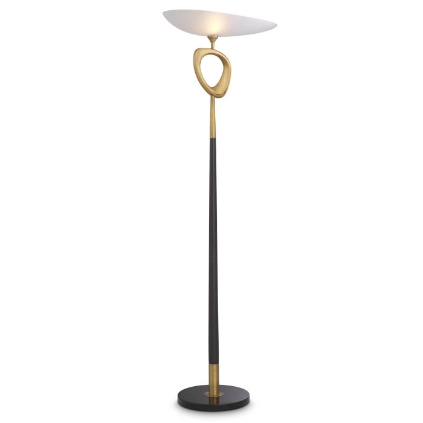

Торшер Celine


| Характеристика | Значение |
|---|---|
| Бренд | Eichholtz |
| Материал | металл, стекло |
| Страна происхождения | Нидерланды |
| Габариты | A. 61 | B. 35 | C. 181,5 cm |
| Стиль | Ар-деко |
| Цвет | черный |
| Назначение | Библиотека Спальня |
Торшер Селин напоминает одну из сюрреалистических картин Сальвадора
Дали.
Этот замечательный скульптурный торшер стоит на черном мраморном
основании и имеет черный конусообразный стержень с античным
латунным орнаментом произвольной формы. Асимметричный
абажур из белого стекла завершает необычный дизайн.